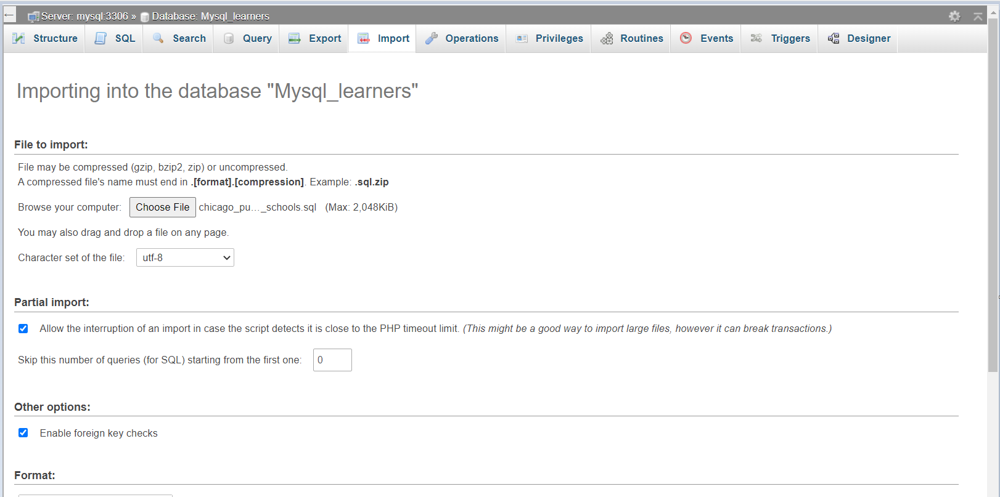
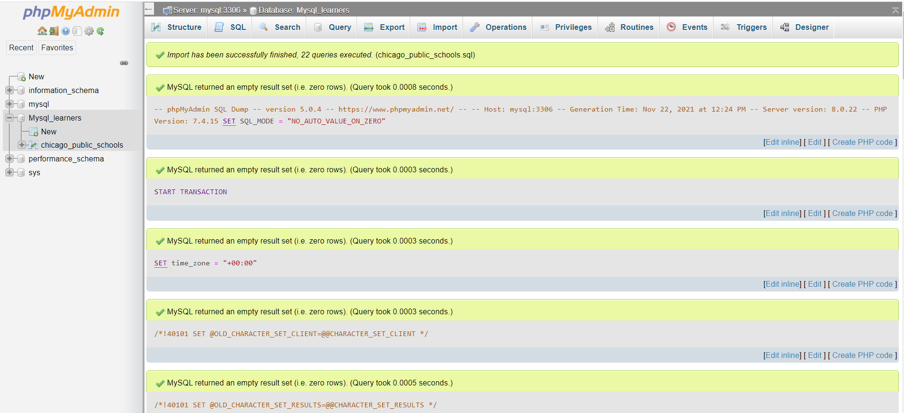
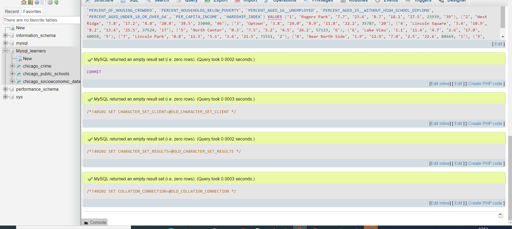

Estimated time needed: 60 minutes
After completing this lab, you will be able to:
Use joins to query data from multiple tables
Create and query views
Write and run stored procedures
Use transactions
In this project, you will work with three datasets that are available on the City of Chicago's Data Portal:
In this lab, you will use MySQL. MySQL is a Relational Database Management System (RDBMS) designed to efficiently store, manipulate, and retrieve data.
To complete this lab you will utilize MySQL relational database service available as part of IBM Skills Network Labs (SN Labs) Cloud IDE. SN Labs is a virtual lab environment used in this course.
Mysql_learners database has been used in this lab.
Here you will be creating and inserting data into the below mentioned 3 tables
1.chicago_public_schools 2.chicago_socioeconomic_data 3.chicago_crime
Here you will be using 3 dump files for this purpose.
To start the MySQL click Start.

You will see the phpMyAdmin GUI tool.

The encoding will be left as utf8mb4_0900_ai_ci. UTF-8 is the most commonly used character encoding for content or data.
Proceed to Task B.

Load the dump files one by one into the database Mysql_learners by clicking the Import tab and choose the file. Click on Go button.


The tables are created and the data is loaded successfully. Repeat the same operation with the other 2 dump files to create and load the tables.
You will see a screen as below

You have been asked to produce some reports about the communities and crimes in the Chicago area. You will need to use SQL join queries to access the data stored across multiple tables.
Take a screenshot showing the SQL query and its results.
Take a screenshot showing the SQL query and its results.
For privacy reasons, you have been asked to create a view that enables users to select just the school name and the icon fields from the CHICAGO_PUBLIC_SCHOOLS table. By providing a view, you can ensure that users cannot see the actual scores given to a school, just the icon associated with their score. You should define new names for the view columns to obscure the use of scores and icons in the original table.
| Column name in CHICAGO_PUBLIC_SCHOOLS | Column name in view |
|---|---|
| NAME_OF_SCHOOL | School_Name |
| Safety_Icon | Safety_Rating |
| Family_Involvement_Icon | Family_Rating |
| Environment_Icon | Environment_Rating |
| Instruction_Icon | Instruction_Rating |
| Leaders_Icon | Leaders_Rating |
| Teachers_Icon | Teachers_Rating |
Write and execute a SQL statement that returns all of the columns from the view.
Write and execute a SQL statement that returns just the school name and leaders rating from the view.
Take a screenshot showing the last SQL query and its results.
The icon fields are calculated based on the value in the corresponding score field. You need to make sure that when a score field is updated, the icon field is updated too. To do this, you will write a stored procedure that receives the school id and a leaders score as input parameters, calculates the icon setting and updates the fields appropriately.
Take a screenshot showing the SQL query.
Take a screenshot showing the SQL query.
| Score lower limit | Score upper limit | Icon |
|---|---|---|
| 80 | 99 | Very strong |
| 60 | 79 | Strong |
| 40 | 59 | Average |
| 20 | 39 | Weak |
| 0 | 19 | Very weak |
IF in_Leader_Score > 0 AND in_Leader_Score < 20 THEN
-- update icon for 0-19
ELSEIF in_Leader_Score < 40 THEN
-- update icon for 20-39
ELSEIF in_Leader_Score < 60 THEN
-- update icon for 40-59
ELSEIF in_Leader_Score < 80 THEN
-- update icon for 60-79
ELSEIF in_Leader_Score < 100 THEN
-- update icon for 80-99
END IF;
Take a screenshot showing the SQL query.
Take a screenshot showing the SQL query and its results.
You realise that if someone calls your code with a score outside of the allowed range (0-99), then the score will be updated with the invalid data and the icon will remain at its previous value. There are various ways to avoid this problem, one of which is using a transaction.
Take a screenshot showing the SQL query.
Take a screenshot showing the SQL query.
Run your code to replace the stored procedure.
Write and run one query to check that the updated stored procedure works as expected when you use a valid score of 38.
Write and run another query to check that the updated stored procedure works as expected when you use an invalid score of 101.
You can now write advanced SQL statements to query data from multiple tables, to obscure sensitive data from users, and to control how information is updated in your tables.
| Date | Version | Changed by | Change Description |
|---|---|---|---|
| 2022-07-04 | 0.2 | Malika Singla | Updated screenshots |
| 2021-11-01 | 0.1 | Lakshmi Holla, Malika Singla | Initial Version |